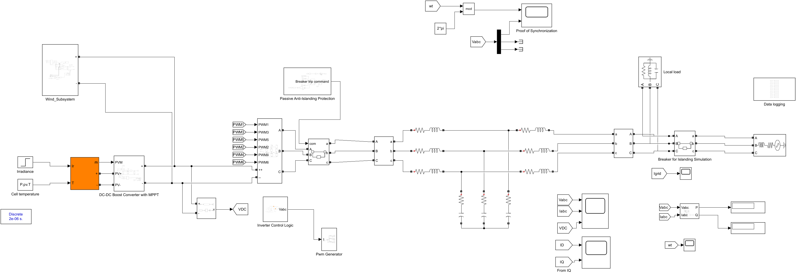
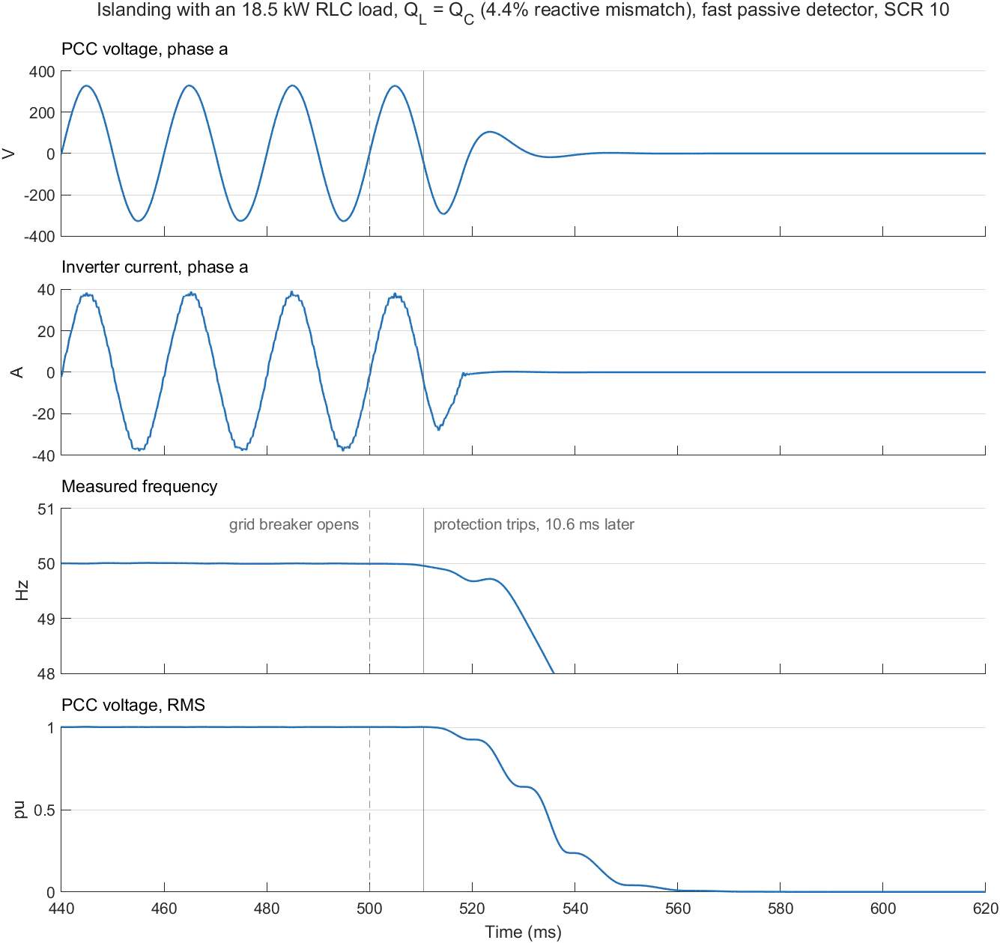
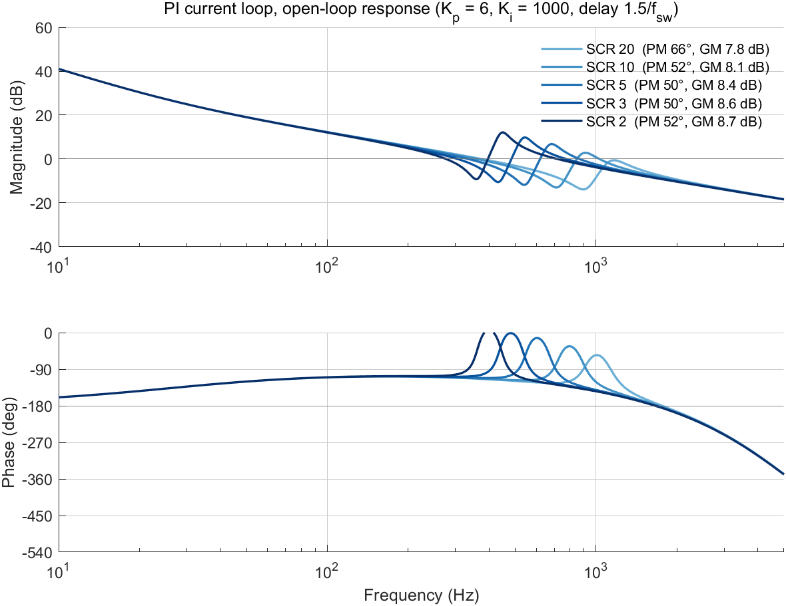
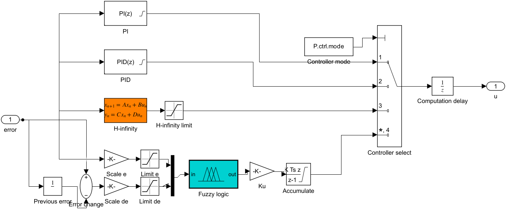
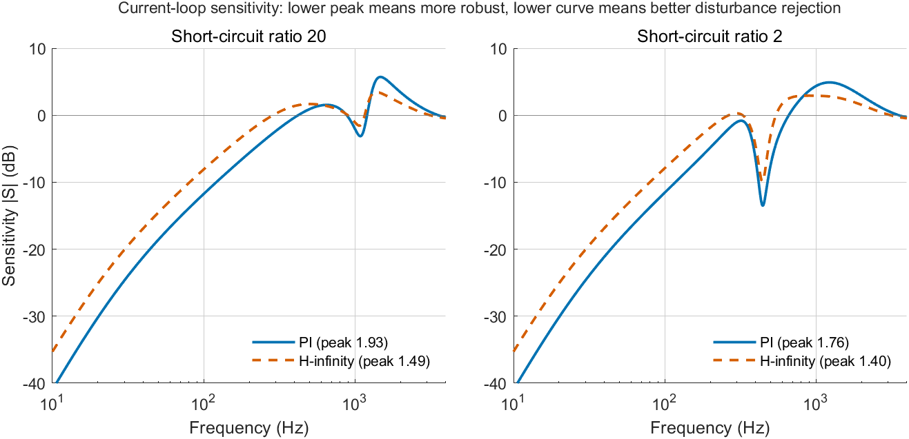
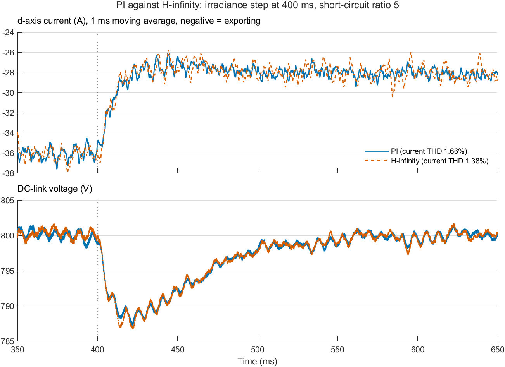

The target is a journal paper on islanding detection for a grid-connected hybrid solar PV–wind system. IEEE 1547-2018 asks an inverter to ride through voltage and frequency disturbances yet still detect a real island within 2 seconds, and passive detectors struggle to tell the two apart.
| Phase | Work | Status |
|---|---|---|
| 1 | Clean up the baseline model | Done |
| 2 | Plant model and PI baseline | Done |
| 3 | H-infinity current controller | Done |
| 4 | Islanding test bench and baseline detectors | Partly built (load, breaker, passive detector); study not started |
| 5–7 | Dataset, ML classifier, closed-loop validation | Not started |
| 8 | Paper | Not started |
The original model (MATLAB_R2018a/pv_and_wind_completed.slx) ran, but a recorded baseline run showed that three subsystems did not do what the report described.
| Item | Original model | Corrected model |
|---|---|---|
| Steady state | None: irradiance followed a 24-hour day squeezed into 2.4 s | Reached within 0.3 s; irradiance is constant or stepped |
| Ratings | Report said 10 kW PV; array in the model was 85 kW | 20 kVA inverter, 10.7 kW PV, 10 kW wind |
| PV MPPT | Voltage reference capped at 50 V for a 290 V array; PV voltage collapsed | Perturb-and-observe on duty cycle; 10.6 kW at about 290 V |
| Wind turbine | Torque from a fixed rotor speed, applied as a motor load; fixed boost duty | Uses the generator's speed, drives it as a generator, optimal-torque MPPT |
| Frequency signal | PLL angle multiplied by π/2; climbed from 44 to 489 | Taken from the PLL, averaged over one cycle; 50.00 Hz |
| Protection | Latched at start-up and could never open the breaker | Opens the breaker after a blanking time and stops both boost converters |
| LCL filter | 100 µF with 0.001 Ω damping | 1.6 mH, 0.8 mH, 15 µF, 2 Ω damping; resonance 1.78 kHz |
| Grid | Near-ideal source | Impedance set by short-circuit ratio (SCR), X/R = 3 |
| Simulation speed | 954 s per simulated second | 40 to 70 s per simulated second |
The active power filter and an unconnected spare wind block were removed. A local RLC load (quality factor 1) and a timed grid breaker were added so that islanding can be tested.

hybrid_pv_wind_islanding.slx. PV array and boost converter at the left, wind subsystem above, three-phase inverter, LCL filter, local load, islanding breaker and grid at the right.| Test | Result |
|---|---|
| Normal operation, SCR 10 | 18.5 kW exported from about 20.4 kW generated; DC link 800 V with 4 V ripple; no false trip |
| Wind step, 12 to 9 m/s | Rotor speed settles at 26.2 rad/s against an optimum of 26.4 |
| Irradiance step, 1000 to 600 W/m² | PV settles at 6.47 kW, the expected 60% of rating |
| Islanding, 12 kW load | Protection trips 4.5 ms after the grid breaker opens |
| Islanding, load matched to generation | Protection trips 10.7 ms after the grid breaker opens |

The current controller measures the inverter-side inductor current i1, and the model adds the measured PCC voltage to the controller output (voltage feedforward). With that path closed, the per-phase plant from controller output u to i1 is
with Z1 = sL1 + R1, Zc = Rd + 1/(sCf), Z2 = sL2 + R2 and the grid impedance Zg = sLg + Rg set by the short-circuit ratio. This is scripts/plant_model.m.
| Case | Phase margin | Gain margin | Sensitivity peak |
|---|---|---|---|
| No control delay, SCR 20 to 2 | 86° to 89° | unlimited | 1.0 |
| Digital delay of 1.5 switching periods, SCR 20 to 2 | 50° to 66° | 7.9 to 8.7 dB | 1.76 to 1.93 |
The DC-link voltage loop crosses over at 15 Hz with 78° phase margin, and the PLL at 47 Hz with 66°.

| Short-circuit ratio and test | Result |
|---|---|
| 20, 10, 5, start at full power | Stable; current THD 0.7 to 1.3%; PCC voltage up to 1.05 pu |
| 3 and 2, start at full power | Loses synchronism within 50 ms and does not recover |
| 3 and 2, power ramped up after start | Stable at 17.8 kW; current THD 1.2 to 1.3%; voltage THD 2.9 to 3.6%; PCC voltage 1.07 to 1.08 pu |
Conclusion of Phase 2. The PI baseline is stable in steady state down to a short-circuit ratio of 2. It degrades in three ways as the grid weakens: it cannot start at full power below a ratio of about 5, the PCC voltage approaches the 1.10 pu trip limit, and frequency ripple grows from 0.007 to 0.125 Hz.
The grid inductance is the uncertain quantity: between a short-circuit ratio of 20 and 2 it changes from 1.2 mH to 12.1 mH and moves the plant resonance. Three synthesis routes were tried.
| Method | Outcome |
|---|---|
Mixed-sensitivity (mixsyn) at one design point | Good at the design point (sensitivity peak 1.31) but unstable at other grid strengths, because it cancels the plant resonance |
µ-synthesis (musyn) with uncertain inductance | Very high-order scalings, did not finish in ten minutes, robust performance still above 2 after four iterations |
Structured H-infinity (hinfstruct) on five plants at once | Adopted. One fixed-order controller tuned against SCR 20, 10, 5, 3 and 2 simultaneously; no order reduction needed |
The synthesis minimises the worst case, over the five plants, of the stacked weighted closed-loop functions:
| Weight | Purpose | Setting |
|---|---|---|
| W1 on sensitivity S | Tracking and disturbance rejection | Peak ≤ 1.5, bandwidth 220 Hz, near-integral action at low frequency |
| W2 on control effort KS | Limit high-frequency controller gain | 1/40 at low frequency, rising above 800 Hz |
| W3 on complementary sensitivity T | Roll-off and robustness | Peak ≤ 1.3, roll-off above 1.5 kHz |
Each plant includes a 1.5-sample delay (computation plus PWM). The controller structure is a PI stage in series with a second-order section and a low-pass, order 4 in total, with every parameter bounded so the filter cannot cancel the integrator. An unconstrained third-order filter did exactly that in an earlier attempt.
| Tuned value | Result | Tuned value | Result |
|---|---|---|---|
| Proportional gain | 4.00 | Section numerator damping | 0.61 |
| Integral gain | 500 (lower bound) | Section denominator damping | 0.72 |
| Second-order section frequency | 794 Hz | Low-pass corner | 8 kHz (upper bound) |
The worst-case weighted norm is 1.27, so the targets are almost but not fully met. The controller is discretised with the Tustin method at 10 kHz and stored in scripts/hinf_controller.mat.
The current control of both axes is now sampled at the switching frequency, in step with the PWM carrier, and its output is applied one sample later. Each axis has one block holding the PI controller, the H-infinity controller, a selector and the computation delay. The parameter P.ctrl.useHinf selects PI (0) or H-infinity (1), so both controllers are tested in the same model.

| SCR | PI | H-infinity | ||||
|---|---|---|---|---|---|---|
| Gain margin | Phase margin | Sens. peak | Gain margin | Phase margin | Sens. peak | |
| 20 | 7.9 dB | 66° | 1.93 | 11.3 dB | 67° | 1.49 |
| 10 | 8.2 dB | 52° | 1.89 | 11.8 dB | 67° | 1.47 |
| 5 | 8.5 dB | 50° | 1.82 | 12.2 dB | 68° | 1.44 |
| 3 | 8.7 dB | 50° | 1.78 | 12.3 dB | 61° | 1.41 |
| 2 | 8.7 dB | 52° | 1.76 | 12.4 dB | 58° | 1.40 |
On the linear model at SCR 10, the closed-loop step response has 12% overshoot with H-infinity against 22% with PI, and a bandwidth of 359 Hz against 487 Hz.

| Test | PI | H-infinity |
|---|---|---|
| Start at full power, SCR 20 | Stable; current THD 1.7%, voltage THD 1.7% | Stable; 1.7%, 1.3% |
| Start at full power, SCR 10 | Stable; 1.0%, 1.6% | Stable; 1.4%, 1.9% |
| Start at full power, SCR 5 | Stable; 0.8%, 1.4% | Stable; 1.4%, 2.9% |
| Start at full power, SCR 3 | Loses synchronism | Loses synchronism |
| Power ramp, SCR 3 | Stable; 1.3%, 2.7% | Stable; 1.2%, 2.5% |
| Power ramp, SCR 2 | Stable; 1.3%, 3.4% | Stable; 1.2%, 2.9% |
| DC-link deviation after the power step | 17.8 V | 17.7 V |

demo_hinfRun from the project folder in MATLAB:
cd 'D:\Junior paper' bdclose all addpath scripts demo_hinf
| Step | What the script does | What appears |
|---|---|---|
| 1 | Opens the model at "Current controller d" and highlights the H-infinity block | The Simulink diagram of Figure 4 |
| 2 | Loads the saved controller, rebuilds the plant at five grid strengths and computes margins for PI and H-infinity | The tuned values and the margins table of Result 1, in the Command Window |
| 3 | Runs the irradiance-step test twice (PI, then H-infinity) at SCR 5 with the local load removed | Two run summaries in the Command Window, then Figure 6, saved as docs/hinf_demo.png |
The two run summaries list power, DC-link voltage, PV voltage and power, rotor speed, frequency, PCC voltage, d- and q-axis current and the trip flag at several times. The first belongs to PI and the second to H-infinity. The last line reports current THD after the step: 1.66% for PI and 1.38% for H-infinity in this case.
| File | Purpose |
|---|---|
hybrid_pv_wind_islanding.slx | Corrected test-bed model |
MATLAB_R2018a/ | Original models, unchanged |
scripts/params.m | Every rating, gain and test setting in one place |
scripts/build_model.m | Rebuilds the corrected model from the original, change by change |
scripts/run_model.m, signal_metrics.m | Run a case and report power, distortion, DC link, frequency, trip |
scripts/plant_model.m, loop_margins.m, analyze_pi.m | Plant model and PI margins |
scripts/sweep_scr.m, softstart_scr.m | PI baseline against grid strength |
scripts/design_hinf.m, hinf_controller.mat | H-infinity design and the saved controller |
scripts/compare_controllers.m | PI against H-infinity in simulation |
scripts/demo_hinf.m | The demonstration described in section 5 |
docs/, results/ | Figures and result tables |